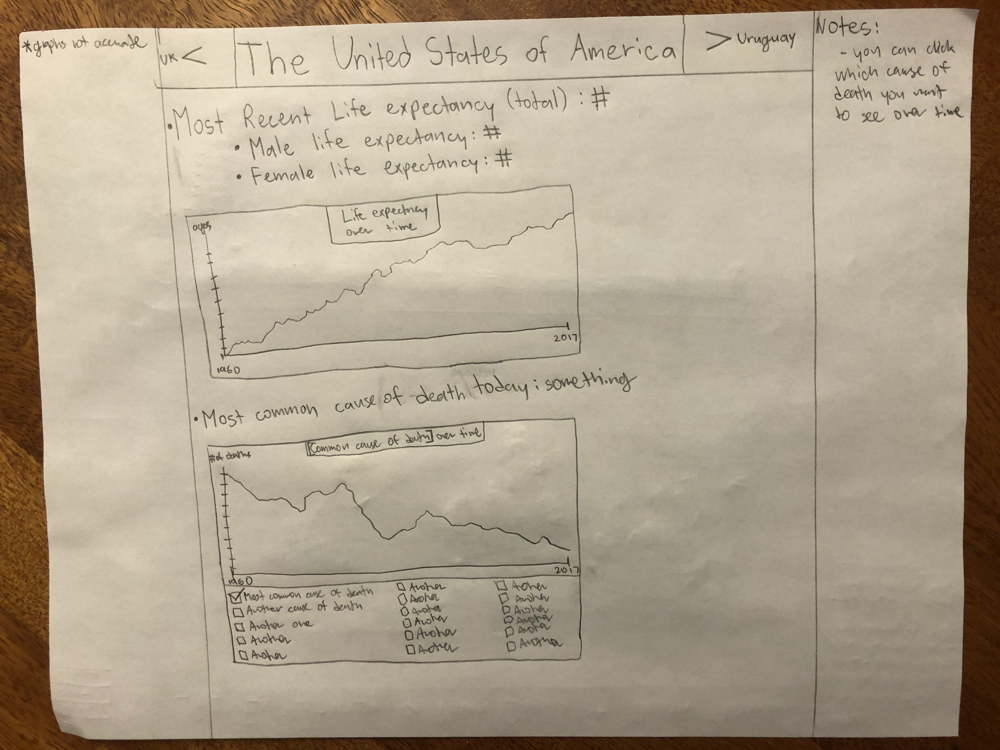
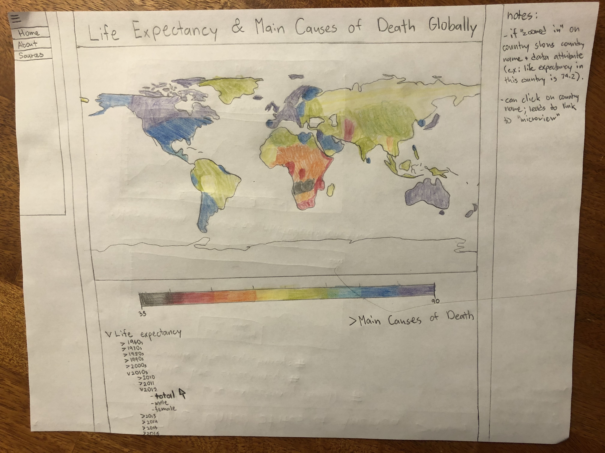
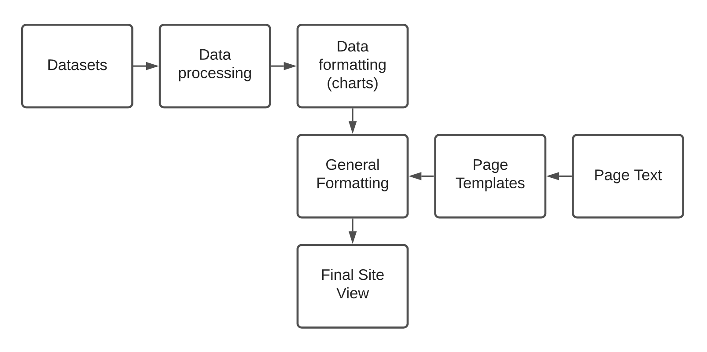

This was a possible version for the site's microview. We kept the idea of having charts that show the data over time, but we will add a slider that can change the dates. Also, we can make it cleaner by only having 1 chart where you can choose whether you are viewing life expectancy or main causes of death. We kept the idea of having checkboxes where you can see specific causes of death, and we figured that you should be able to check multiple at a time so you can compare data. UX DESIGN PERSPECTIVES HERE

This was a possible version for the site's macroview. We liked the color-coding scheme and the idea that if you "zoomed in" on a country it would lead to a microview. The endless dropdown menus seemed like a hassle, so we decided to go with a slider instead to make the site cleaner. UX DESIGN PERSPECTIVES HERE

DESCRIPTION HERE